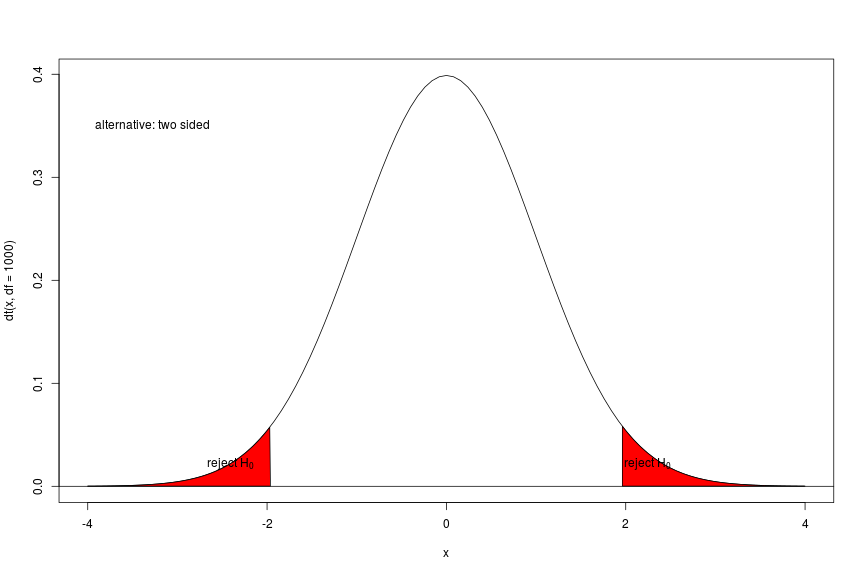
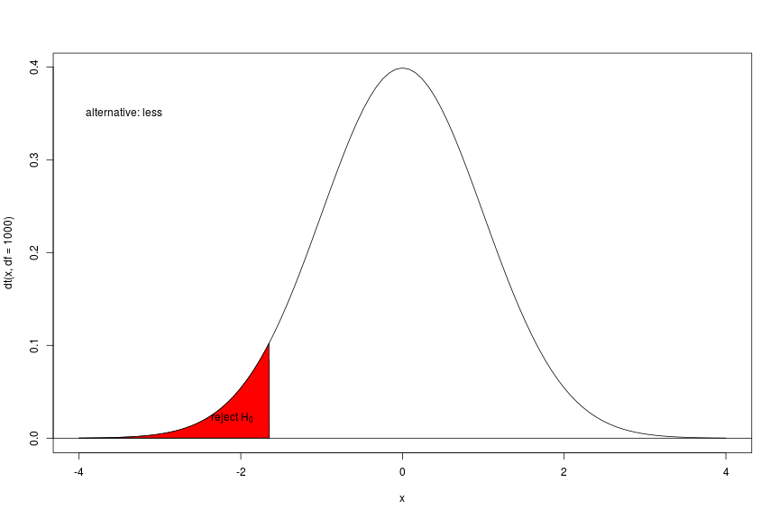
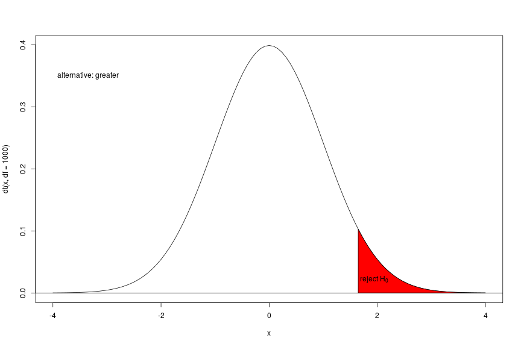

Mandy
Ross says that that observing the global labour of love has tempered his cynicism.
You should know now:
We have seen how
the sample sizea (as a parameter of uncertainty)
are combined to measure the difference of the location of two groups this measure is compared to a null distribution through this comparison transformed in to a probability (p-value)
\[t = \frac{\bar{X}_{male} - \bar{X}_{female}}{s_{overall}\sqrt{\frac{1}{n_1} + \frac{1}{n_2}}}\]



The p-value is the probability of the sample estimate (of the respective estimator - here our t) under the null. We do not know anything of probabilities of the null or of estimates under the alternative!
| \(H_0\) is true | \(H_0\) is false | |
|---|---|---|
| \(H_0\) is not rejected | Correct decision | Type II error |
| \(H_0\) is rejected | Type I error | Correct decision |
t.test()set.seed(1)
x <- rnorm(12) ## create random numbers
t.test(x,mu=0) ## population mean 0
##
## One Sample t-test
##
## data: x
## t = 1.1478, df = 11, p-value = 0.2754
## alternative hypothesis: true mean is not equal to 0
## 95 percent confidence interval:
## -0.2464740 0.7837494
## sample estimates:
## mean of x
## 0.2686377
t.test(x,mu=1) ## population mean 1
##
## One Sample t-test
##
## data: x
## t = -3.125, df = 11, p-value = 0.009664
## alternative hypothesis: true mean is not equal to 1
## 95 percent confidence interval:
## -0.2464740 0.7837494
## sample estimates:
## mean of x
## 0.2686377
set.seed(1)
x <- rnorm(12) ## create random numbers
y <- rnorm(12) ## create random numbers
head(data.frame(x,y))
## x y
## 1 -0.6264538 -0.62124058
## 2 0.1836433 -2.21469989
## 3 -0.8356286 1.12493092
## 4 1.5952808 -0.04493361
## 5 0.3295078 -0.01619026
## 6 -0.8204684 0.94383621
t.test(x,y)
##
## Welch Two Sample t-test
##
## data: x and y
## t = 0.59393, df = 20.012, p-value = 0.5592
## alternative hypothesis: true difference in means is not equal to 0
## 95 percent confidence interval:
## -0.5966988 1.0717822
## sample estimates:
## mean of x mean of y
## 0.26863768 0.03109602
g <- sample(c("A","B"),12,replace = T) ## create random group vector
head(data.frame(x,g))
## x g
## 1 -0.6264538 B
## 2 0.1836433 B
## 3 -0.8356286 A
## 4 1.5952808 B
## 5 0.3295078 A
## 6 -0.8204684 A
t.test(x~g)
##
## Welch Two Sample t-test
##
## data: x by g
## t = -0.66442, df = 6.3524, p-value = 0.5298
## alternative hypothesis: true difference in means is not equal to 0
## 95 percent confidence interval:
## -1.6136329 0.9171702
## sample estimates:
## mean in group A mean in group B
## 0.1235413 0.4717726
t.test(x,y,var.equal = T)
##
## Two Sample t-test
##
## data: x and y
## t = 0.59393, df = 22, p-value = 0.5586
## alternative hypothesis: true difference in means is not equal to 0
## 95 percent confidence interval:
## -0.5918964 1.0669797
## sample estimates:
## mean of x mean of y
## 0.26863768 0.03109602
Use the ALLBUS data set:
Suppose you are rolling a fair die 600 times: what is the number of 6s you are expecting?
And how many 6s do we need to reject the NULL (a fair die) using a two-sided test??
qbinom(p = c(0.025,0.975),size = 600, prob = 1/6)
## [1] 82 118
What do we have to change for a one-sided test?
Suppose you are rolling a fair die 600 times: what is the number of 6s you are expecting?
And how many 6s do we need to reject the NULL (a fair die) using a one-sided test??
qbinom(p = 0.95,size = 600, prob = 1/6)
## [1] 115
qbinom(p = 0.05,size = 600, prob = 1/6)
## [1] 85
So now let R rolling the dice!
sample(1:6,600,replace = T)
## [1] 6 2 3 2 4 2 3 5 1 6 3 6 3 3 3 6 6 3 5 6 3 5 3 2 5 2 5 1 2 1 2 1 4 6 5
## [36] 5 3 3 5 4 4 3 2 6 4 2 1 3 6 4 6 5 3 3 1 1 5 1 3 4 6 3 3 2 5 3 4 2 2 4
## [71] 4 1 1 4 6 4 4 4 6 4 5 4 2 2 5 3 2 5 1 6 4 4 2 3 4 2 4 1 2 2 2 6 3 5 6
## [106] 3 1 3 5 3 4 6 6 3 3 6 4 5 4 6 2 2 6 4 6 2 5 5 6 4 5 3 1 6 2 4 1 6 2 5
## [141] 2 2 4 2 2 4 4 1 2 5 6 1 5 6 5 2 4 6 6 3 2 1 2 4 6 4 2 1 3 6 3 1 3 4 3
## [176] 5 5 4 3 3 2 4 6 1 3 2 3 1 3 6 5 6 3 4 3 1 2 3 3 6 4 2 2 5 5 1 1 5 4 2
## [211] 1 1 3 2 2 2 2 2 3 5 1 4 6 3 1 1 2 1 1 2 2 1 6 2 4 5 1 1 1 6 5 1 3 3 3
## [246] 6 2 5 1 3 1 2 6 5 2 3 1 3 6 4 4 2 3 6 6 6 5 5 2 5 6 2 3 5 1 3 3 1 4 6
## [281] 6 2 4 3 5 2 3 2 3 5 3 1 5 3 6 2 6 1 6 3 1 2 6 2 4 6 1 5 5 3 3 4 6 2 2
## [316] 3 3 6 2 3 3 4 4 6 2 2 5 5 1 6 1 1 6 4 1 3 4 2 3 1 4 2 6 6 6 5 3 5 1 6
## [351] 6 3 5 5 5 3 3 2 5 5 3 4 4 1 3 3 1 6 6 6 6 1 3 4 1 5 5 1 3 6 1 2 4 4 2
## [386] 3 3 6 1 1 6 3 3 2 1 4 4 6 4 1 1 3 1 3 2 6 5 1 3 5 3 6 5 3 1 2 6 3 3 5
## [421] 5 1 6 6 4 4 2 1 6 1 1 6 2 1 3 3 3 4 6 1 4 5 4 4 3 6 3 6 5 4 6 3 1 5 5
## [456] 2 4 4 3 4 5 5 3 1 3 6 5 5 6 6 4 1 3 2 1 1 3 3 2 4 3 6 4 2 2 1 6 3 4 5
## [491] 6 4 1 6 5 3 1 1 5 5 4 1 3 5 6 5 2 4 2 6 1 3 2 1 5 4 5 3 6 5 3 6 4 1 4
## [526] 3 1 4 6 5 4 2 5 4 5 4 3 3 3 3 5 6 1 5 6 6 3 3 6 1 6 3 4 4 5 3 1 3 4 1
## [561] 6 2 4 1 2 4 2 4 3 6 6 3 2 5 3 2 1 1 5 5 6 2 6 2 5 2 1 6 5 6 5 6 3 3 4
## [596] 1 2 4 5 6
Count the 6s!
sample(1:6,600,replace = T)==6
## [1] FALSE FALSE FALSE FALSE FALSE FALSE TRUE FALSE FALSE FALSE FALSE
## [12] FALSE FALSE FALSE FALSE FALSE FALSE FALSE FALSE FALSE FALSE FALSE
## [23] FALSE FALSE FALSE FALSE FALSE FALSE FALSE TRUE FALSE FALSE FALSE
## [34] FALSE FALSE FALSE FALSE FALSE TRUE FALSE TRUE TRUE FALSE FALSE
## [45] FALSE FALSE FALSE FALSE TRUE FALSE FALSE FALSE FALSE FALSE FALSE
## [56] FALSE FALSE FALSE FALSE FALSE FALSE FALSE TRUE FALSE FALSE TRUE
## [67] FALSE FALSE FALSE FALSE FALSE FALSE FALSE FALSE FALSE FALSE FALSE
## [78] FALSE FALSE FALSE FALSE FALSE FALSE FALSE FALSE FALSE FALSE TRUE
## [89] FALSE FALSE FALSE TRUE FALSE FALSE FALSE FALSE FALSE FALSE TRUE
## [100] FALSE FALSE FALSE TRUE FALSE FALSE FALSE FALSE FALSE TRUE FALSE
## [111] FALSE FALSE FALSE TRUE FALSE FALSE FALSE FALSE FALSE TRUE TRUE
## [122] FALSE FALSE FALSE TRUE FALSE FALSE FALSE FALSE FALSE FALSE FALSE
## [133] TRUE FALSE FALSE FALSE FALSE FALSE FALSE FALSE TRUE FALSE TRUE
## [144] FALSE FALSE FALSE FALSE TRUE FALSE FALSE FALSE FALSE FALSE TRUE
## [155] FALSE FALSE TRUE TRUE FALSE FALSE FALSE FALSE FALSE FALSE TRUE
## [166] FALSE FALSE FALSE FALSE FALSE FALSE TRUE TRUE FALSE FALSE FALSE
## [177] FALSE TRUE TRUE FALSE TRUE FALSE FALSE FALSE FALSE FALSE FALSE
## [188] FALSE FALSE FALSE TRUE FALSE FALSE TRUE FALSE FALSE FALSE FALSE
## [199] FALSE FALSE FALSE FALSE FALSE FALSE FALSE FALSE FALSE FALSE FALSE
## [210] FALSE FALSE TRUE FALSE FALSE FALSE FALSE FALSE FALSE FALSE TRUE
## [221] FALSE TRUE TRUE TRUE FALSE FALSE FALSE FALSE FALSE FALSE FALSE
## [232] FALSE FALSE FALSE FALSE FALSE FALSE FALSE FALSE FALSE FALSE FALSE
## [243] FALSE FALSE FALSE FALSE FALSE FALSE FALSE FALSE FALSE FALSE FALSE
## [254] FALSE FALSE FALSE FALSE FALSE FALSE TRUE FALSE TRUE TRUE FALSE
## [265] TRUE FALSE FALSE FALSE FALSE FALSE FALSE TRUE FALSE FALSE FALSE
## [276] FALSE TRUE FALSE TRUE FALSE FALSE TRUE FALSE FALSE FALSE FALSE
## [287] FALSE FALSE TRUE FALSE FALSE FALSE FALSE TRUE FALSE FALSE TRUE
## [298] FALSE FALSE FALSE FALSE FALSE FALSE FALSE FALSE FALSE FALSE TRUE
## [309] TRUE FALSE TRUE FALSE FALSE TRUE FALSE FALSE FALSE FALSE FALSE
## [320] FALSE FALSE FALSE TRUE FALSE FALSE FALSE FALSE FALSE TRUE FALSE
## [331] FALSE FALSE FALSE FALSE FALSE FALSE FALSE FALSE FALSE FALSE FALSE
## [342] FALSE FALSE TRUE FALSE FALSE FALSE FALSE TRUE FALSE TRUE FALSE
## [353] FALSE TRUE FALSE TRUE TRUE FALSE FALSE FALSE FALSE FALSE FALSE
## [364] TRUE FALSE FALSE FALSE FALSE FALSE FALSE FALSE FALSE FALSE TRUE
## [375] FALSE FALSE FALSE FALSE TRUE FALSE FALSE FALSE FALSE FALSE FALSE
## [386] FALSE FALSE FALSE FALSE TRUE FALSE FALSE FALSE TRUE TRUE FALSE
## [397] FALSE FALSE FALSE FALSE FALSE TRUE TRUE FALSE FALSE TRUE FALSE
## [408] FALSE TRUE FALSE FALSE FALSE FALSE FALSE TRUE FALSE FALSE FALSE
## [419] FALSE FALSE FALSE FALSE FALSE FALSE FALSE FALSE FALSE FALSE TRUE
## [430] FALSE FALSE FALSE FALSE FALSE FALSE FALSE FALSE FALSE FALSE TRUE
## [441] FALSE FALSE FALSE FALSE FALSE FALSE FALSE FALSE TRUE FALSE FALSE
## [452] FALSE FALSE FALSE FALSE FALSE FALSE FALSE FALSE FALSE FALSE FALSE
## [463] FALSE FALSE FALSE TRUE FALSE FALSE FALSE FALSE TRUE FALSE FALSE
## [474] FALSE FALSE FALSE FALSE FALSE FALSE FALSE FALSE FALSE FALSE FALSE
## [485] FALSE FALSE FALSE FALSE FALSE FALSE TRUE FALSE FALSE TRUE TRUE
## [496] FALSE FALSE FALSE FALSE FALSE FALSE FALSE FALSE FALSE TRUE FALSE
## [507] TRUE FALSE FALSE FALSE FALSE FALSE FALSE FALSE FALSE FALSE FALSE
## [518] FALSE FALSE FALSE FALSE FALSE FALSE FALSE TRUE FALSE FALSE FALSE
## [529] FALSE FALSE FALSE TRUE FALSE FALSE FALSE TRUE FALSE FALSE FALSE
## [540] FALSE FALSE FALSE TRUE FALSE FALSE TRUE FALSE TRUE FALSE FALSE
## [551] FALSE FALSE FALSE FALSE FALSE TRUE TRUE FALSE FALSE FALSE FALSE
## [562] FALSE FALSE FALSE FALSE FALSE FALSE FALSE TRUE FALSE FALSE FALSE
## [573] FALSE FALSE FALSE TRUE FALSE FALSE FALSE FALSE FALSE FALSE FALSE
## [584] FALSE TRUE TRUE TRUE FALSE FALSE FALSE FALSE FALSE FALSE TRUE
## [595] FALSE FALSE FALSE FALSE TRUE FALSE
Count the 6s!
sum(sample(1:6,600,replace = T)==6)
## [1] 109
Now use the following code to replicate the experiment (rolling one fair dice 600 times) 1000 times. The number of 6s are stored in the vector x.
How many statistically significant results do you expect for a one-sided alternative? How many for a two-sided alternative?
How many statistically significant results did you get? (you can use table() in combination with a logical function)
Visualize the result using ggplot2 and geom_histogram() (look at the help of geom_histogram )!
x <- replicate(1000, sum(sample(1:6,600,replace = T)==6))
df <- data.frame(repid = 1:1000, n.6s = x)
head(df,10)
## repid n.6s
## 1 1 93
## 2 2 99
## 3 3 122
## 4 4 105
## 5 5 104
## 6 6 106
## 7 7 107
## 8 8 118
## 9 9 104
## 10 10 107